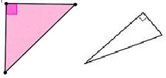

When two line segments meet at a point, they form an angle. The point where the two sides meet is called the vertex. Here are some angles.
You are probably familiar with a right angle, such as the corner of a square. Each of the corners of the tabletop below is a right angle. The two arms of a plus sign form four right angles. We say that the sides of a right angle are perpendicular. \(~~~~~~~~~~~~~~~~~~~~\blert{\text{Right angles: a square table}}~~~~~~~~~~\blert{\text{Perpendicular lines make a plus sign}}\)
Now imagine slowly opening a laptop computer until the two sides lie flat on the table. The two sides form an angle that gradually opens until the two covers form a straight line. We give different names to angles, depending on how open they are.
\(~~~~~~~~~~~~~~~\blert{\text{Partially open}}~~~~~~~~~~\blert{\text{More than half-way open}}~~~~~~~~~~~~~\blert{\text{All the way open}}\)\(~~~~~~~~~~~~~~~\blert{\text{An acute angle}}~~~~~~~~~~~~~~~~\blert{\text{An obtuse angle}}~~~~~~~~~~~~~~~~~~~~~~\blert{\text{A straight angle}}\)
Kinds of Angles.
If the sides are less open than a right angle, we call the angle acute.
If the sides are more open than a right angle, we call the angle obtuse.
If the two sides are totally open to form a straight line, we call the angle a straight angle.
Example1.4.1.
In the pictures below, the handles of the hedge clipper form an acute angle. The hands of the clock form an obtuse angle.
We use degrees to measure how open an angle is. The symbol for a degree is \(\degree\text{.}\) A right angle is 90\(\degree\text{,}\) and a straight angle is 180\(\degree\text{.}\)
The degree measure of an acute angle is less than 90\(\degree\text{,}\) and the degree measure of an obtuse angle is between 90\(\degree\) and 180\(\degree\text{.}\)
Question.
What do you think an angle of 0\(\degree\) looks like?
Note1.4.3.
The measure of an angle does not depend on the orientation of the angle, or on how long the sides are, or whether the angle is combined with other angles. It only depends on how open the sides are. Here are some pictures of 30\(\degree\) angles.
We use the symbol \(\angle\) to stand for "angle."
Example1.4.4.
The picture shows two angles that together make a right angle. If the measure of \(\angle~A\) is 25\(\degree\text{,}\) what is the measure of \(\angle~B\text{?}\)
Place the center dot of the protractor at the vertex of the angle.
Line up the bottom line of the protractor along one of the sides of the angle.
Read the number where the other side of the angle meets the scale on the circular edge of the protractor.
Note1.4.6.
Notice that the protractor has one scale that starts at the right edge and increases in the counterclockwise direction, and a second scale that starts on the left edge. That's so you can line up the first side of the angle in either direction from the center.
Place the protractor as shown below, with the vertex O in the center and side OB lined up along the bottom of the protractor.
Now follow the scale that increases from side OB up to side OA. In this case it is the inner scale. We see that side OA meets the inner scale at 40\(\degree\text{.}\) The measure of \(\angle~AOB\) is 40\(\degree\text{.}\)
Checkpoint1.4.8.
What is the measure of the obtuse angle shown below?
Use your straightedge to draw an acute angle. Use your protractor to find the degree measure of your angle.
Use your straightedge to draw an obtuse angle. Use your protractor to find the degree measure of your angle.
Use your protractor to find the degree measure of each angle.
On another sheet of paper, use your straightedge to draw a triangle of any shape you like. Label the angles of your triangle A, B, and C.
Now cut or tear off the three angles and place the vertex of angle A on the dot below.
Next place the vertex of angle B at the dot so that one of its sides touches one of the sides of angle A. Repeat with angle C.
\begin{equation*}
\LARGE{\cdot}
\end{equation*}
What do you notice about the sum of the three angles? Write it below:
Subsection1.4.4Triangles
Triangles come in various shapes, depending on the size of their angles or the lengths of their sides. Here are the names of some triangles classified by the size of their angles.
Triangles.
A right triangle has one right angle.
In an acute triangle, all three angles are acute.
In an obtuse triangle, one of the angles is obtuse.
Example1.4.9.
Some right triangles

Some acute triangles
Some obtuse triangles
Checkpoint1.4.10.
Identify each triangle as right, acute, or obtuse. The little square indicates that the angle is \(90 \degree\text{.}\)
You may have noticed that the longest side in a triangle is always opposite the largest angle.
Example1.4.13.
In the triangle below, side \(c\) is opposite the 120\(\degree\) angle, and it is the longest side. Side \(b\text{,}\) which is the shortest side, is opposite the 20\(\degree\) angle.
In fact, because \(120\degree \gt 40\degree \gt 20\degree\text{,}\) we know that \(c \gt a \gt b\text{.}\)
Note1.4.14.
The symbol \(\blert{\gt}\) means "is greater than." So, \(c \gt a \gt b\) means "\(c\) is greater than \(a\text{,}\) which is greater than \(b\text{.}\)"
Similarly, the symbol \(\blert{\lt}\) means "is less than."
These symbols are called inequality symbols (as opposed to equals signs), and sentences such as \(c \gt a \gt b\) are called inequalities (as opposed to equations).
Inequality Symbols.
\(~~~~~~~~\blert{\gt}~~~~\) means "is greater than"
\(~~~~~~~~\blert{\lt}~~~~\)means "is less than"
Checkpoint1.4.15.
Write an inequality about the angles in the triangle below.
In any triangle, the angle opposite the longest side is the largest angle, and the angle opposite the shortest side is the smallest angle.
What about triangles that have equal sides, namely isosceles and equilateral triangles? The angles opposite equal sides must also be equal.
Definition.
In an isosceles triangle, the two equal angles (the ones opposite the equal sides) are called the base angles, and the third angle (the one included between the equal sides) is called the vertex angle.
Example1.4.16.
The triangle below is isosceles. What is the measure of the other base angle, and what is the measure of the vertex angle?
The base angles of an isosceles triangle are equal, so the other base angle is 38\(\degree\text{.}\) To find the vertex angle, we recall that the sum of all the angles in a triangle is 180\(\degree\text{,}\) so the vertex angle must be